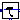

| Name | Description |
|---|---|
| crane trolley system | |
|  DoublePendulum2 | crane trolley system |
 Modelica_LinearSystems2.Controller.Examples.Components.DoublePendulum
Modelica_LinearSystems2.Controller.Examples.Components.DoublePendulum
| Name | Description |
|---|---|
| m_trolley | [kg] |
| m_load | [kg] |
| length | [m] |
| phi1_start | [rad] |
| phi2_start | [rad] |
| w1_start | [rad/s] |
| w2_start | [rad/s] |
| Name | Description |
|---|---|
| u | |
| s | |
| v | |
| phi | |
| w | |
| phi1 | |
| w1 |
 Modelica_LinearSystems2.Controller.Examples.Components.DoublePendulum2
Modelica_LinearSystems2.Controller.Examples.Components.DoublePendulum2
Extends from Templates.PlantTemplate (MIMO plant template).
| Name | Description |
|---|---|
| n | system order |
| m | number of inputs |
| l | number of measurable outputs |
| additionalMeasurableOutputs | |
| m_trolley | [kg] |
| m_load | [kg] |
| length | [m] |
| phi1_start | [rad] |
| phi2_start | [rad] |
| w1_start | [rad/s] |
| w2_start | [rad/s] |
| Name | Description |
|---|---|
| y[n] | |
| u[m] | |
| ym[l] |